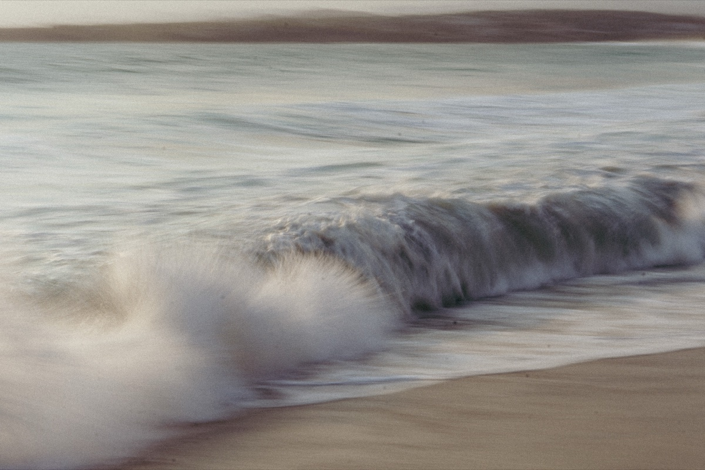
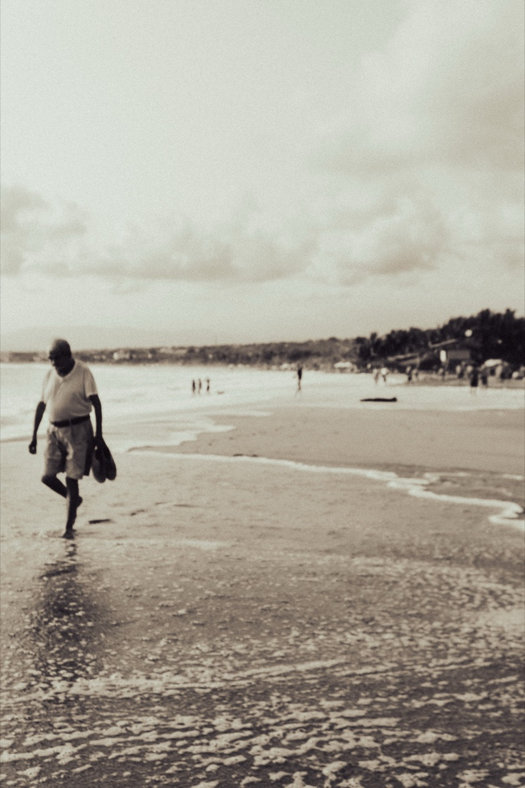

Emergence
An interactive experience built as a final project, exploring how complex systems and patterns form from simple interactions: how water drops become an ocean, or how neurons firing electricity somehow produce consciousness. 1+1=3.
Image 1
Image 2
Video 1
Video 2
Eidos: i'm not a robot
A branding project inspired by brands like Off-White and Nothing, a digital brand that embraces technology but also questions its relationship with humanity.
Video 1
Video 2
Image 1
Image 2
Sketches and doodling
I cultivate the habit of drawing from imagination, letting my mind draw whatever it wants without judging it. It keeps my creativity sharp.
Sketch 1
Sketch 2
Sketch 3
Sketch 4
Photography
Shots I've taken and edited myself, chasing light, mood, and moments worth slowing down for.

